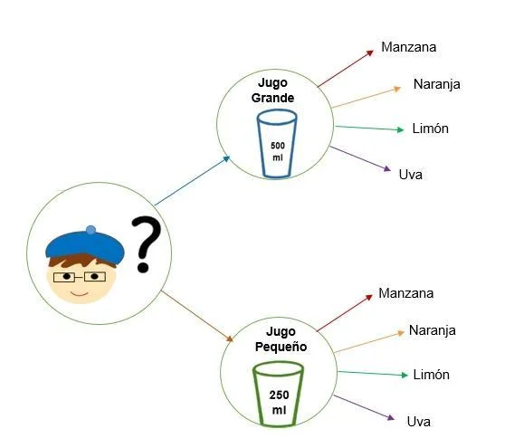

La teoría de decisiones se ocupa de analizar cómo elige una persona aquella acción que, de entre un conjunto de acciones posibles, le conduce al mejor resultado dadas sus preferencias
Una población estadística, es el conjunto de elementos que son de interés para un experimento, un estudio o una consideración de algún tipo. Los elementos que lo componen pueden ser por ejemplo individuos, animales, fenómenos u eventos.
El muestreo aleatorio es un proceso que permite obtener una muestra sobre una población, basada en una determinada probabilidad de elección de los individuos que la conforman.
Se llama variable aleatoria aquella que toma diversos valores o conjuntos de valores con distintas probabilidades.
Los datos agrupados son aquellos que están clasificados en función a un criterio, mostrando una frecuencia para cada clase o grupo formado.
Los datos no agrupados son aquellos que no han recibido ningún tratamiento o clasificación luego de ser recolectados. Es decir, no se ha separado a los datos por grupos bajo ningún criterio.
La frecuencia de clase es la frecuencia (número o porcentaje de datos) que se sitúa dentro de un intervalo de clase determinado en una distribución estadística agrupada o histograma construido a partir de aquella.
La frecuencia relativa es una medida estadística que se calcula como el cociente de la frecuencia absoluta de algún valor de la población/muestra (fi) entre el total de valores que componen la población/muestra (N).
El punto medio de clase (o marca de clase ) es un punto específico en el centro de los contenedores (categorías) en una tabla de distribución de frecuencia ; También es el centro de una barra en un histograma .
Un límite nos dice el valor al que una función se aproxima conforme sus valores de entrada se acercan cada vez más a cierto número.
La media aritmética es un tipo de media que otorga la misma ponderación a todos los valores.
Se define como la raíz índice n del producto de n términos. La media geométrica se utiliza con más frecuencia para calcular la tasa de crecimiento porcentual promedio de algunas series dadas, a través del tiempo.
Es una media de centralización que da una importancia distinta a cada uno de los valores sobre los que se calcula la media
La mediana es un número (estadístico) que divide una lista de valores en dos partes iguales. Esto significa que la mitad de los valores son menores que la mediana y la otra mitad son mayores.
La moda estadística es aquel valor que, dentro de un conjunto de datos, se repite el mayor número de veces.
Las medidas de dispersión dan información sobre el grado de variabilidad de una variable estadística. Esto se consigue a través de diferentes fórmulas que nos dan un valor numérico para valorar el grado de dispersión.
La varianza es una medida de dispersión que representa la variabilidad de una serie de datos con respecto a su media.
La desviación estándar es una medida de extensión o variabilidad en la estadística descriptiva. Se utiliza para calcular la variación o dispersión en la que los puntos de datos individuales difieren de la media.
La desviación media es una medida importante de dispersión que nos permite entender cuánto varían los datos de un conjunto promedio.
La desviación mediana es una medida de dispersión estadística que indica cuánto tienden a desviarse los valores de un conjunto de datos respecto a la mediana.
El rango es un valor numérico que indica la diferencia entre el valor máximo y el mínimo de una serie de datos o muestra estadística.
Los parámetros principales para datos agrupados son:
Este se refiere al número de elementos que conforman cada grupo o categoría.
Es el promedio aritmético de los valores dentro de cada grupo. Varianza del grupo (s²): Mide la dispersión de los valores dentro de cada grupo con respecto a su media.
Mide la dispersión de los valores dentro de cada grupo con respecto a su media.
Es la raíz cuadrada de la varianza. Indica cuánto se desvían los valores del grupo respecto a la media.
Es el número de elementos o la cantidad de veces que se repite cada grupo o categoría.
Se conoce como el numero de ocasiones que existe un evento en un espacio muestral
Es una tecnica que ayuda a resolver problemas de conteo para encontrar la solucion y se basa en una multiplicacion sucesiva para determinar laforma en la que puede ocurrir un evento.
Ejemplo:
Una variable aleatoria es discreta cuando sólo puede tomar unos ciertos valores enteros en un número finito de valores o infinito numerable.
cálculo matemático que establece todas las posibilidades que existen de que ocurra un fenómeno en determinadas circunstancias de azar.
El valor esperado suele denominarse media o promedio "a largo plazo". Esto significa que a largo plazo de hacer un experimento una y otra vez, se esperaría este promedio.
La varianza y la desviación estándar son medidas de dispersión o variabilidad, es decir, indican la dispersión o separación de un conjunto de datos.
La función de distribución acumulativa especifica la probabilidad de que una variable aleatoria sea menor o igual a un valor dado. La función de distribución acumulativa de la variable aleatoria X es la función F(x) = P(X ≤ x).
Una variable aleatoria continua es aquella que puede tomar cualquier valor (al menos teóricamente) entre 2 fijados.
Una distribución de probabilidad es aquella que permite establecer toda la gama de resultados probables de ocurrir en un experimento determinado
El valor esperado es uno de los conceptos fundamentales en probabilidad, en un sentido más general que la probabilidad misma. El valor esperado de una variable aleatoria de valor real da una medida del centro de la distribución de la variable.
La varianza y la desviación estándar son medidas de dispersión o variabilidad, es decir, indican la dispersión o separación de un conjunto de datos.
La función de distribución acumulativa es la función que para un valor x, nos da la probabilidad de que la variable aleatoria sea menor o igual que dicho valor x.
El cálculo de probabilidades es el estudio de cómo se determina la posibilidad de ocurrencia de un suceso.